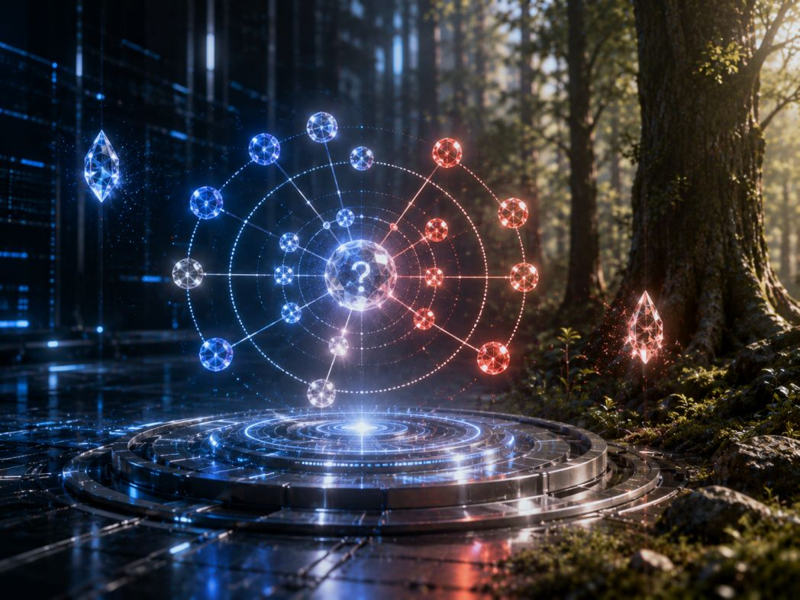
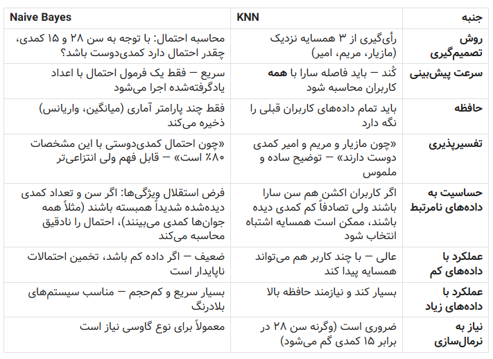

سایر بخشهای این سلسله مقالات را از دست ندهید:
کدام مدل هوش مصنوعی برای کدام مسئله مناسب است؟ - بخش اول (Naive Bayes)
کدام مدل هوش مصنوعی برای کدام مسئله مناسب است؟ - بخش دوم (رگرسیون)
کدام مدل هوش مصنوعی برای کدام مسئله مناسب است؟ بخش سوم(SVM)
کدام مدل هوش مصنوعی برای کدام مسئله مناسب است؟-بخش چهارم (درخت تصمیم-جنگل تصادفی)
کدام مدل هوش مصنوعی برای کدام مسئله مناسب است؟ - بخش پنجم(K-means)
کدام مدل هوش مصنوعی برای کدام مسئله مناسب است؟ بخش ششم و آخر(KNN)
در بخشهای قبلی از این سلسله مقالات، اغلب الگوریتمها و مدلهای رایج در هوش مصنوعی کلاسیک را بررسی کردیم؛ از Naive Bayes و رگرسیون لجستیک گرفته تا SVM، درخت تصمیم، جنگل تصادفی و K-means. هر کدام از این مدلها رویکرد منحصربهفردی برای یادگیری از دادهها داشتند: برخی بر پایه احتمالات، برخی بر اساس مرزبندی هندسی، و برخی دیگر با شبیهسازی فرآیند تصمیمگیری انسانی عمل میکردند. اما در میان تمام این روشها، الگوریتم دیگری نیز وجود دارد که شاید سادهترین و شهودیترین منطق را در کل فرایند یادگیری ماشین داشته باشد: «همسایهات را ببین، خودت را بشناس.»

در این بخش به بررسی الگوریتم K-Nearest Neighbors (KNN) میپردازیم. برخلاف مدلهایی که یک تابع یا مرز پیچیده را از دادهها «یاد میگیرند»، KNN اساساً هیچ مرحلهٔ آموزش واقعی ندارد! این الگوریتم تمام دادههای آموزشی را به خاطر میسپارد و هنگام مواجهه با نمونهٔ جدید، صرفاً به نزدیکترین همسایگان آن نگاه میکند و بر اساس رأی آنها تصمیم میگیرد. همین سادگی ظاهری، KNN را به ابزاری قدرتمند برای مسائلی تبدیل کرده است که در آنها مرزهای تصمیمگیری پیچیده و غیرخطی هستند و مدلهای پارامتریک قادر به توصیف آنها نیستند.
در ادامه خواهیم دید که KNN چگونه در کاربردهایی مانند تشخیص دستخط، سیستمهای توصیهگر و تشخیص پزشکی عمل میکند، چرا انتخاب مقدار K حیاتی است، و چه زمانی باید از این الگوریتم استفاده کرد و چه زمانی سراغ گزینههای دیگر رفت. همچنین به چالش مهم «نفرین ابعاد» (Curse of Dimensionality) خواهیم پرداخت که نشان میدهد چرا KNN در فضاهای با ویژگیهای بسیار زیاد، عملکردش به شدت افت میکند.
K-Nearest Neighbors (K-نزدیکترین همسایه) چیست؟
این الگوریتم با یک فلسفه ساده کار میکند: «همسایهات را به من بگو تا بگویم کیستی». KNN برای پیشبینی، هیچ مدل ریاضی پیچیدهای نمیسازد و اصطلاحاً «تنبل» است — یعنی کل دادههای آموزش را حفظ میکند و فقط وقتی یک نمونه جدید میرسد، دست به کار میشود. در آن لحظه، فاصله نمونه جدید را با همه دادههای قبلی محاسبه میکند، K تا از نزدیکترین همسایهها را پیدا میکند و بر اساس رأی اکثریت آنها (برای طبقهبندی) یا میانگینشان (برای مقدار عددی)، برچسب نمونه جدید را پیشبینی میکند. K یک عدد انتخابی است (مثلاً ۵ یا ۷) که میگوید چند همسایه را بررسی کنیم.
مثال کاربردی: پیشنهاد فیلم در پلتفرم پخش آنلاین
فرض کنید یک پلتفرم میخواهد به کاربر جدیدی به نام «سارا» فیلم پیشنهاد دهد که آیا طرفدار فیلم کمدی است یا اکشن. سارا فقط دو ویژگی دارد: سن ۲۸ سال و ۱۵ فیلم کمدی دیده است.
پلتفرم اطلاعات کاربران قبلی را نیز دارد:
-
مازیار (۳۰ ساله، ۲۰ کمدی) ← عاشق کمدی
-
مریم (۲۵ ساله، ۱۸ کمدی) ← عاشق کمدی
-
رضا (۴۵ ساله، ۳ کمدی) ← عاشق اکشن
-
ندا (۵۰ ساله، ۱ کمدی) ← عاشق اکشن
-
امیر (۲۲ ساله، ۱۲ کمدی) ← عاشق کمدی
حالا KNN با K=3 شروع به کار میکند: فاصله سارا را با همه کاربران محاسبه میکند و ۳ همسایه نزدیکتر را مییابد: مازیار، مریم و امیر. دو نفر از این سه نفر برچسب «کمدی» دارند، پس مدل پیشبینی میکند سارا هم عاشق کمدی است و فیلمهای کمدی به او پیشنهاد میشود.
KNN چند ویژگیکلیدی دارد:
-
بدون آموزش است: فقط دادهها را ذخیره میکند (یادگیری تنبل).
-
به مقیاس حساس است: اگر سن بین ۰ تا ۱۰۰ و تعداد فیلم بین ۰ تا ۱۰۰۰ باشد، مقادیر باید نرمالسازی شوند وگرنه ویژگی با اعداد بزرگتر، فاصله را به ناحق تعیین میکند.
-
پیشبینی آن به کندی انجام میشود: برای هر نمونه جدید باید تمام دادهها را پیمایش کند — برای دادههای بزرگ بسیار کند است.
-
انتخاب K مناسب یک چالش است: K خیلی کوچک باعث حساسیت به نویز میشود، K خیلی بزرگ مرزها را بیش از حد هموار میکند.
در ادامه KNN و Naive Bayes را با استفاده از همان مثال پیشنهاد فیلم مقایسه میکنیم:
Naive Bayes برخلاف KNN که منتظر نمونه جدید میماند، از قبل یک مدل احتمالی میسازد. در مثال سارا (۲۸ سال، ۱۵ کمدی)، این الگوریتم در مرحله آموزش، توزیع احتمال سن و تعداد فیلمهای کمدی را برای هر گروه (عاشقان کمدی و عاشقان اکشن) جداگانه یاد میگیرد. مثلاً میفهمد که عاشقان کمدی معمولاً جوانترند و تعداد فیلم کمدی بالاتری دارند. بعد برای سارا، با فرض مستقل بودن سن و تعداد فیلم، احتمال تعلق او به هر گروه را محاسبه میکند و گروه با احتمال بالاتر را انتخاب میکند. جدول زیر مقایسه این دو روش است در مثال توصیه فیلم:

مقایسه دو الگوریتم KNN و Naive Bayes
بطور خلاصه میتوان نتیجه گرفت که:
-
اگر پلتفرم تازه راه افتاده و کاربر کمی دارد، KNN بهتر است — چراکه با چند کاربر همسایه، پیشنهاد میدهد و دلیلش هم ملموس است: «فیلم کمدی به شما پیشنهاد میشود چون کاربران مشابه شما (مازیار و مریم) آن را دوست داشتند.»
-
اگر پلتفرم میلیونها کاربر دارد و باید در کسری از ثانیه تصمیم بگیرد، Naive Bayes برتر است — مدل احتمال را یکبار از روی کل دادهها میسازد و بعد برای هر کاربر جدید، بیدرنگ و با سربار کم، بهترین ژانر را پیشبینی میکند.
حال به این نکته میپردازیم که چرا انتخاب مقدار K حیاتی است؟ در الگوریتم KNN، پارامتر K صرفاً یک عدد تنظیمی نیست؛ بلکه مرز باریک بین «حفظ جزئیات» و «کشف الگوهای کلی» را تعیین میکند. انتخاب نادرست این مقدار میتواند مدل را به دو دام کاملاً متضاد گرفتار کند:
۱. اگر K خیلی کوچک باشد (مثلاً K=1)
مدل دچار بیشبرازش (Overfitting) میشود. در این حالت، پیشبینی تنها بر اساس نزدیکترین همسایه انجام میشود و مدل به شدت نسبت به نویز و نقاط پرت حساس است.
-
مثال: فرض کنید در دادههای تشخیص سرطان، یک نمونهٔ سالم به اشتباه در میان خوشهٔ تومورها قرار گرفته است. با K=1، هر بیمار جدیدی که نزدیک این نقطهٔ خطا باشد، قطعاً «سرطانی» پیشبینی میشود—حتی اگر تمام همسایگان بعدی او سالم باشند.
-
نتیجه: مرز تصمیمگیری بسیار پیچیده، دندانهدار و ناپایدار میشود. مدل روی دادههای آموزشی عالی است، اما روی دادههای جدید شکست میخورد.
۲. اگر K خیلی بزرگ باشد (K=n)
مدل دچار کمبرازش (Underfitting) میشود. در این حالت، رأیگیری شامل تقریباً تمام دادهها خواهد بود و الگوهای محلی و ظریف کاملاً محو میشوند.
-
مثال: اگر در مجموعه دادهٔ ۱۰۰۰ نفره، ۶۰٪ افراد سالم و ۴۰٪ بیمار باشند، با K=1000 مدل —صرفنظر از ویژگیهای بیمار جدید— همیشه سلولها را «سالم» پیشبینی میکند.
-
نتیجه: مرز تصمیمگیری بیش از حد ساده و صاف میشود. مدل توانایی تمایز قائل شدن بین گروهها را از دست میدهد و عملاً به یک پیشبینیکنندهٔ کور تبدیل میشود.
۳. نقطهٔ طلایی: تعادل
مقدار K مناسب جایی است که مدل نه آنقدر حساس باشد که نویز را یاد بگیرد، و نه آنقدر کلینگر که الگوهای واقعی را نادیده بگیرد. این نقطه معمولاً با روشهایی مانند اعتبارسنجی متقابل (Cross-Validation) پیدا میشود: مقادیر مختلف K را تست میکنیم و آن مقداری را انتخاب میکنیم که دقت روی دادههای آزمون را بیشینه کند.
۴. چند نکته ظریف اما مهم در انتخاب K
-
K فرد بهتر است: در مسائل دستهبندی دودویی، انتخاب K فرد (مثل ۳، ۵، ۷) از تساوی رأی جلوگیری میکند.
-
اندازهٔ دادهها بسیار مهم است: برای مجموعهدادههای کوچک، K کوچکتر مناسب است؛ برای دادههای حجیم، K بزرگتر ثبات بیشتری ایجاد میکند.
-
عدم توازن کلاسها: اگر یک دسته بسیار بزرگتر از دیگری باشد، K بزرگ ممکن است همیشه به نفع دستهٔ غالب رأی دهد. در این شرایط، استفاده از KNN وزندار (که همسایگان نزدیکتر رأی قویتری دارند) ضروری است.
به بیان ساده، انتخاب K در KNN مثل تنظیم فاصلهٔ کانونی دوربین است: اگر خیلی نزدیک شوید، فقط جزئیات بیاهمیت را میبینید؛ اگر خیلی دور شوید، همه چیز تار و مبهم میشود. هنر مهندس هوش مصنوعی، یافتن آن فاصلهٔ دقیقی است که تصویر واضح و معناداری از واقعیت ارائه دهد.
حال ببینیم چه زمانی باید از الگوریتم KNN استفاده کرد و چه زمانی سراغ گزینههای دیگر رفت؟ این تصمیمگیری به ماهیت دادهها، منابع محاسباتی و هدف نهایی پروژه بستگی دارد. KNN ابزاری قدرتمند اما خاصمنظوره است و استفادهٔ نابجا از آن میتواند منجر به شکست پروژه شود.
چه زمانی KNN بهترین انتخاب است؟
۱. وقتی مرزهای تصمیمگیری پیچیده و غیرخطی باشند: وقتی رابطه بین ویژگیها و خروجی با یک خط یا صفحهٔ ساده قابل توصیف نیست (مثلاً تشخیص دستخط یا الگوهای پیچیده در تصاویر پزشکی)، KNN به دلیل ماهیت مبتنی بر شباهت محلی، عملکرد بهتری نسبت به مدلهای خطی مانند رگرسیون لجستیک دارد.
۲. دادهها کمحجم تا متوسط هستند: KNN برای مجموعهدادههایی با چند هزار تا چند ده هزار نمونه ایدهآل است. در این مقیاس، سرعت جستجوی همسایگان قابل قبول است و خطر بیشبرازش کمتر.
۳. مسائلی که تفسیرپذیری بر اساس «شباهت» مهم است: وقتی نیاز داریم به کاربر بگوییم «این مورد شبیه به موارد X، Y و Z است»، KNN توضیحی طبیعی و قابل فهم ارائه میدهد. این ویژگی در سیستمهای توصیهگر («مشتریانی که این کالا را خریدند، آن کالا را هم پسندیدند») یا تشخیص پزشکی («بیمار شما علائمی مشابه این ۵ بیمار قبلی دارد») بسیار ارزشمند است.
۴. امکان پروتوتایپ سازی سریع و ایجاد خط پایه (Baseline): به دلیل سادگی پیادهسازی و عدم نیاز به آموزش، KNN اغلب اولین مدلی است که برای سنجش دشواری مسئله و مقایسه با مدلهای پیچیدهتر استفاده میشود.
۵. وقتی دادهها چندکلاسه با توزیع نامتوازن هستند: برخلاف برخی مدلها که به کلاس غالب تمایل دارند، KNN (بهویژه نسخهٔ وزندار) میتواند کلاسهای اقلیت را بهتر شناسایی کند، زیرا تصمیمگیری محلی است و تحت تأثیر توزیع کلی دادهها قرار نمیگیرد.
چه زمانی باید از KNN اجتناب کرد؟
۱. دادههای حجیم (Big Data): KNN یک الگوریتم «تنبل» (Lazy Learner) است؛ یعنی تمام محاسبات را در زمان پیشبینی انجام میدهد. برای میلیونها رکورد، زمان پاسخدهی غیرقابل تحمل میشود. در این شرایط، مدلهایی مانند جنگل تصادفی، Gradient Boosting یا شبکههای عصبی که مرحلهٔ آموزش آفلاین دارند، مناسبترند.
۲. فضاهای با ابعاد بسیار بالا (نفرین ابعاد): وقتی تعداد ویژگیها صدها یا هزاران مورد است (مثل پردازش متن خام یا ژنومیک)، مفهوم «فاصله» معنای خود را از دست میدهد و تمام نقاط تقریباً همفاصله به نظر میرسند. در این شرایط، ابتدا باید از کاهش بُعد (PCA، t-SNE) استفاده کرد یا مستقیماً به سراغ مدلهایی رفت که ذاتاً با ابعاد بالا سازگارند (مثل SVM با هسته مناسب یا درخت تصمیم).
۳. نیاز به پیشبینی بلادرنگ (Real-time): اگر سیستم باید در میلیثانیه پاسخ دهد (مثل تشخیص تقلب در تراکنشهای آنلاین)، KNN گزینهٔ مناسبی نیست. مدلهای پارامتریک که پیشبینی را به یک ضرب ماتریسی ساده تبدیل میکنند، در این سناریوها بیرقیباند.
۴. ویژگیهای با مقیاسهای بسیار متفاوت بدون امکان نرمالسازی: اگر نمیتوانید دادهها را نرمالسازی کنید (مثلاً به دلایل حریم خصوصی یا فنی)، KNN نتایج گمراهکننده تولید میکند. درخت تصمیم و جنگل تصادفی نسبت به مقیاس ویژگیها مصون هستند.
۵. وقتی به مدلی قابل استقرار و سبک نیاز داریم: KNN نیاز به ذخیرهٔ کل مجموعهٔ آموزشی دارد. اگر حافظه محدود است (مثلاً در دستگاههای IoT یا موبایل)، مدلهای فشردهشده مانند رگرسیون لجستیک یا درختهای هرسشده ترجیح داده میشوند.
در مجموع KNN را زمانی انتخاب میکنیم که دادهها متوسط، مرزها پیچیده، و تفسیرپذیری محلی مهم است. اما اگر با دادههای حجیم، ابعاد بالا، یا نیاز به سرعت بلادرنگ مواجهید، KNN را کنار بگذارید و به سراغ خانوادهٔ درختها، SVM یا شبکههای عصبی بروید. هنر مهندس هوش مصنوعی نه در تسلط بر یک الگوریتم، بلکه در تشخیص دقیق نقطهٔ قوت هر ابزار و تطبیق آن با واقعیت مسئله است.
«نفرین ابعاد» (Curse of Dimensionality)
چالش مهم «نفرین ابعاد» (Curse of Dimensionality) در بسیاری از مدلها و الگوریتمهای هوش مصنوعی به یک مشکل اساسی تبدیل میشود، اما تأثیر آن بر KNN مخربتر و مستقیمتر از هر الگوریتم دیگری است. این اصطلاح که اولین بار توسط ریچارد بلمن در سال ۱۹۶۱ مطرح شد، به پدیدهای اشاره دارد که با افزایش تعداد ویژگیها (ابعاد)، فضای دادهها به صورت نمایی گسترش مییابد و دادههای موجود در آن فضا به شدت پراکنده و رقیق میشوند.
چرا این اتفاق برای KNN فاجعهبار است؟
KNN تماماً بر پایهٔ مفهوم «فاصله» و «همسایگی» بنا شده است. اما در فضاهای با ابعاد بالا، این دو مفهوم معنای خود را از دست میدهند:
نخست، بدلیل همگرایی فاصلهها: وقتی تعداد ابعاد به صدها یا هزاران میرسد، تفاوت بین «نزدیکترین همسایه» و «دورترین همسایه» به سمت صفر میل میکند. به بیان ریاضی، نسبت فاصلهٔ نزدیکترین نقطه به دورترین نقطه به ۱ نزدیک میشود. یعنی عملاً همه نقاط تقریباً همفاصله هستند و KNN دیگر نمیتواند تشخیص دهد کدام نقطهها واقعاً «شبیه» هم هستند.
دوم، نیاز به داده نمایی میشود: برای حفظ همان چگالی دادهها در فضای دوبعدی، اگر ۱۰۰ نمونه کافی باشد، در فضای ۱۰ بعدی به 100^5 (ده میلیارد) نمونه نیاز است! در عمل، هیچ مجموعهدادهای چنین حجمی ندارد، بنابراین فضای جستجوی KNN خالی از دادههای معنادار میشود.
سوم، غلبهٔ نویز بر سیگنال: در ابعاد بالا، بسیاری از ویژگیها احتمالاً بیربط یا نویزی هستند. از آنجا که KNN تمام ابعاد را با وزن برابر در محاسبهٔ فاصله لحاظ میکند، انبوهی از ابعاد بیمعنی، سیگنال واقعی موجود در چند ویژگی کلیدی را کاملاً دفن میکنند.
به بیان ساده، نفرین ابعاد برای KNN مثل این است که بخواهید در یک شهر بیابانی بیانتها که خانهها کیلومترها از هم فاصله دارند، همسایهٔ دیواربهدیوار پیدا کنید. حتی اگر همسایهای وجود داشته باشد، آنقدر دور است که دیگر «همسایه» محسوب نمیشود. بدون کاهش ابعاد یا افزایش نمایی دادهها، KNN در فضاهای با ابعاد زیاد عملاً به یک پیشبینیکنندهٔ تصادفی تبدیل میشود.
راهکارهای متعددی برای کاهش تأثیر نفرین ابعاد بر عملکرد KNN ارائه شده است—از روشهای کلاسیک کاهش بُعد مانند PCA و LDA گرفته تا تکنیکهای پیشرفتهٔ انتخاب ویژگی، متریکهای فاصلهٔ تطبیقی و نسخههای اصلاحشدهٔ KNN مانند LW-KNN یا Metric Learning—اما بررسی عمیق و مقایسهٔ این روشها خارج از حیطهٔ این مقاله است. هدف ما در اینجا، ایجاد درک شهودی از چرایی آسیبپذیری KNN در فضاهای با ابعاد بالا بود، نه ارائهٔ راهنمای جامع بهینهسازی آن، خواننده علاقمند میتواند به منابع معتبر رجوع کند.
سایر بخشهای این سلسله مقالات را از دست ندهید:
کدام مدل هوش مصنوعی برای کدام مسئله مناسب است؟ - بخش اول (Naive Bayes) کدام مدل هوش مصنوعی برای کدام مسئله مناسب است؟ - بخش دوم (رگرسیون)
کدام مدل هوش مصنوعی برای کدام مسئله مناسب است؟ بخش سوم(SVM) کدام مدل هوش مصنوعی برای کدام مسئله مناسب است؟-بخش چهارم (درخت تصمیم-جنگل تصادفی) کدام مدل هوش مصنوعی برای کدام مسئله مناسب است؟ - بخش پنجم(K-means) کدام مدل هوش مصنوعی برای کدام مسئله مناسب است؟ بخش ششم و آخر(KNN)